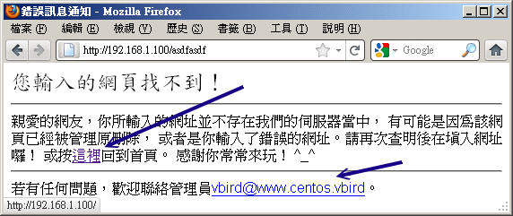
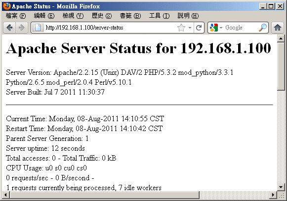
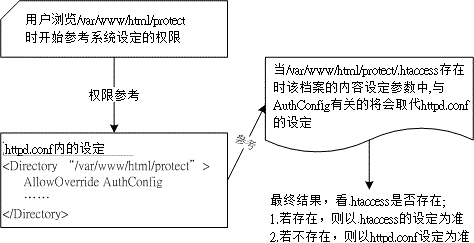

20.3 Apache 伺服器的進階設定
事實上，剛剛上頭的基本設定已經很足夠朋友們架設 WWW 伺服器所需了！不過，還有很多可以玩玩的地方， 例如個人用戶首頁、虛擬主機以及認證保護的網頁等等。底下我們分別來談一談囉！
20.3.1 啟動用戶的個人網站 (權限是重點)
每一部 WWW 伺服器都有一個首頁，但是如果每個個人用戶都想要有可以自己完全控管的首頁時，那該如何設計？呵呵！Apache 早就幫我們想到了！不過新版的設定檔內常常是預設將這個功能取消的，所以你必需要自行修訂呢！
[root@www ~]# vim /etc/httpd/conf/httpd.conf
# 找到如下的設定項目，大約在 366 行左右：
<IfModule mod_userdir.c>
UserDir disable
#UserDir public_html
</IfModule>
# 將他改成如下的情況喔！
<IfModule mod_userdir.c>
#UserDir disable
UserDir www
</IfModule>
# 重新啟動一下先！
[root@www ~]# /etc/init.d/httpd restart
這只是個範例，Apache 預設的個人首頁是放置在家目錄下的 ~/public_html/ 目錄下！假如你的系統有個帳號叫做 student， 那麼預設的屬於 student 的個人首頁就會放置在 /home/student/public_html/ 底下。不過，這個 public_html 實在很討厭， 看起來跟網頁沒有什麼特殊關連性，因此鳥哥都會將這個目錄改為 www，所以 student 的個人首頁就會是在 /home/student/www/ 目錄下，比較好記憶。
例題：如何讓未來所有『新增』的使用者預設家目錄下都有個 www 的目錄？ 答：因為新增使用者時所參考的家目錄在 /etc/skel 目錄內，所以你可以直接 mkdir /etc/skel/www 即可。 若想要讓用戶直接擁有一個簡易的首頁，還能夠使用 echo "My homepage" > /etc/skel/www/index.html 呢！
- 個人首頁的 URL 以及目錄的權限、SELinux 設定
現在假設我們要讓已經存在系統中的 student 這個帳號具有個人首頁，那就得要手動去建置所需要的目錄與檔案才行。 現在請登入 student，並用該帳號建置底下的相關資訊：
[student@www ~]$ mkdir www
[student@www ~]$ chmod 755 www <==針對 www 目錄開放權限
[student@www ~]$ chmod 711 ~ <==不要忘了家目錄也要改！
[student@www ~]$ cd www
[student@www www]$ echo "Test your home" >> index.html
由於 CentOS 預設的使用者家目錄權限是 drwx------ ，這個權限將無法讓 Apache 的程序瀏覽啊！所以你至少要讓你的家目錄權限成為 drwx--x--x 才行！這個很重要啊！ 那麼未來只要你在瀏覽器的網址列這樣輸入：
『理論上』就能夠看到你的個人首頁了。不過，可惜的是，我們的 SELinux 並沒有放行個人首頁！所以，此時你會發現瀏覽器出現 『You don't have permission』的訊息！趕緊看一下你的 /var/log/messages，裡面應該會教你進行這項工作：
[root@www ~]# setsebool -P httpd_enable_homedirs=1
[root@www ~]# restorecon -Rv /home/
# 第一個指令在放行個人首頁規則，第二個指令在處理安全類型！
就可以看到你的使用者個人網頁囉！之後讓使用者自己去設計他的網站吧！現在你知道那個毛毛蟲 (~) 在 URL 上面的意義了吧？ ^_^！不過，多這個毛毛蟲就很討厭～我可不可以將使用者的個人網站設定成為：
是可以啦！最簡單的方法是這樣的：
[root@www ~]# cd /var/www/html
[root@www html]# ln -s /home/student/www student
由於我們首頁的『 Options 』內有 FollowSymLinks 這個參數的原因，所以可以直接使用連結檔即可。 另外我們也可以使用 Apache 提供的別名功能 (Alias)，例如這樣做：
[root@www ~]# vim /etc/httpd/conf/httpd.conf
# 找個不與人家設定值有干擾的地方加入這個設定項目：
Alias /student/ "/home/student/www/"
<Directory "/home/student/www">
Options FollowSymLinks
AllowOverride None
Order allow,deny
Allow from all
</Directory>
[root@www ~]# /etc/init.d/httpd restart
不過，如果你使用這個方法的話得要特別注意，在 httpd.conf 內的 Alias 後面接的目錄，需要加上目錄符號 (/) 在結尾處， 同時，網址列必須要輸入 http://IP/student/ ！亦即是結尾也必須要加上斜線才行！否則會顯示找不到該 URL 喔！
20.3.2 啟動某個目錄的 CGI (perl) 程式執行權限
在前幾個小節裡面我們有談到，如果你想要 Apache 可以執行 perl 之類的網頁程式時， 你就得需要安裝一些額外的模組才行。其中 mod_perl 與 mod_python 這兩個軟體建議你最好安裝一下啦！然後我們也提到想要執行 CGI 程式就得到 /var/www/cgi-bin/ 目錄下去執行。如果你想要在其他目錄底下執行 CGI 程式是否可以？當然行啊！
- 利用新目錄下的 Options 參數設定：
假設想要執行 CGI 的程式附檔名為 .cgi 或 .pl ，且放置的目錄在 /var/www/html/cgi/ 時，你可以這樣做：
[root@www ~]# yum install mod_python mod_perl
[root@www ~]# vim /etc/httpd/conf/httpd.conf
# 找到底下這一行，大約在 797 行左右啦：
#AddHandler cgi-script .cgi
# 將他改成底下的模樣，讓附檔名為 .pl 的檔案也能執行喔！
AddHandler cgi-script .cgi .pl
# 然後加入底下這幾行來決定開放某個目錄的 CGI 執行權限。
<Directory "/var/www/html/cgi">
Options +ExecCGI
AllowOverride None
Order allow,deny
Allow from all
</Directory>
[root@www ~]# /etc/init.d/httpd restart
接下來只要讓你的 CGI 程式具有 x 權限，那麼他就可以執行啦！舉例來說，你的檔案在 /var/www/html/cgi/helloworld.pl 的話，那麼：
[root@www ~]# mkdir /var/www/html/cgi
[root@www ~]# vim /var/www/html/cgi/helloworld.pl
#!/usr/bin/perl
print "Content-type: text/html\r\n\r\n";
print "Hello, World.";
[root@www ~]# chmod a+x /var/www/html/cgi/helloworld.pl
然後在網址列輸入：『http://主機名稱或 IP/cgi/helloworld.pl』即可執行該檔案並將結果顯示在螢幕上面囉！
- 使用 ScriptAlias 的功能：
你可以直接利用檔名的別名來處理即可！更簡單呢。我們現在假設所有在 /var/www/perl/ 目錄下的檔案都可以是 perl 所撰寫的程式碼，那麼我們可以這樣做：
[root@www ~]# vim /etc/httpd/conf/httpd.conf
# 同樣的你要先確認這一行是存在的！
AddHandler cgi-script .cgi .pl
# 然後加入底下這幾行來決定開放某個目錄的 CGI 執行權限。
ScriptAlias /perl/ "/var/www/perl/"
[root@www ~]# /etc/init.d/httpd restart
[root@www ~]# mkdir /var/www/perl
[root@www ~]# cp -a /var/www/html/cgi/helloworld.pl /var/www/perl
現在，請在網址列輸入：『http://IP/perl/helloworld.pl』，就能夠看到剛剛的資料了！這個方法比較棒啦！因為該目錄不需要在 Apache 首頁底下也可以成功的啦！這兩個方法你可以隨意取一個來處理即可！不需要兩個都進行啦！
20.3.3 找不到網頁時的顯示訊息通知
如果你的 /var/www/html/cgi 目錄底下沒有任何首頁檔案 (index.???) 時，那當使用者在網址列輸入『 http://your.hostname/cgi 』，請問結果會顯示出什麼呢？可能有兩個：
- 如果你的 Options 裡面有設定 Indexes 的話，那麼該目錄下的所有檔案都會被列出來，提供類似 FTP 的連結頁面。
- 如果沒有指定 Indexes 的話，那麼錯誤訊息通知就會被顯示出來。
事實上 CentOS 所提供的 Apache 已經規範好一些簡單的錯誤資料網頁了，你可以到 /var/www/error/ 目錄下瞧瞧就曉得。不過該目錄下的檔案並沒有中文訊息，所以...真要命！至於 Apache 的錯誤訊息設定在這裡：
[root@www ~]# vim /etc/httpd/conf/httpd.conf
# 大約在 875 行左右，預設就是註解掉的！
# ErrorDocument 403 /error/HTTP_FORBIDDEN.html.var
# ErrorDocument 404 /error/HTTP_NOT_FOUND.html.var
# ErrorDocument 405 /error/HTTP_METHOD_NOT_ALLOWED.html.var
# ErrorDocument 408 /error/HTTP_REQUEST_TIME_OUT.html.var
....(後面省略)....
雖然 Apache 預設有提供一些額外的資料給我們使用，不過，鳥哥不是很喜歡那樣的畫面啦！反而比較喜歡像是 Yahoo 或是其他大型的網站所提供的資訊頁面，可以提供給用戶一些有效的連結，這樣會比較方便用戶連結到我們的網站啊！ 此時我們可以這樣做：
[root@www ~]# vim /etc/httpd/conf/httpd.conf
# 找到底下這一段，大約在 836 行左右，看看這些簡單的範例先：
#ErrorDocument 500 "The server made a boo boo."
ErrorDocument 404 /missing.html <==將註解拿掉吧！
#ErrorDocument 404 "/cgi-bin/missing_handler.pl"
#ErrorDocument 402 http://www.example.com/subscription_info.html
[root@www ~]# /etc/init.d/httpd restart
上面那個檔案 /missing.html 必需要放置在你的首頁目錄下，亦即是 /var/www/html/missing.html 啦！ 要提醒你的是：『你的所有設定檔當中 (包括 /etc/httpd/conf.d/*.conf) 只能存在一個 ErrorDocument 404 ... 的設定值，否則將以較晚出現的設定為主』。 所以你得先搜尋一下，尤其是很多 Linux 版本的 Apache 並沒有將預設的錯誤訊息註解呢。至於那個 404 是啥意思？他的意義是這樣的：
- 100-199：一些基本的訊息
- 200-299：用戶端的要求已成功的達成
- 300-399：Client 的需求需要其他額外的動作，例如 redirected 等等
- 400-499：Client 的要求沒有辦法完成(例如找不到網頁)
- 500-599：主機的設定錯誤問題
好了，接下來讓我們編輯一下那個 missing.html 的檔案內容吧！ ^_^
[root@www ~]# vim /var/www/html/missing.html
<html>
<head>
<meta http-equiv="Content-Type" content="text/html; charset=utf8">
<title>錯誤訊息通知</title>
<head>
<body>
您輸入的網頁找不到！<br />
<hr />
親愛的網友，你所輸入的網址並不存在我們的伺服器當中，
有可能是因為該網頁已經被管理原刪除，
或者是你輸入了錯誤的網址。請再次查明後在填入網址囉！
或按<a href="/">這裡</a>回到首頁。
感謝你常常來玩！ ^_^<br />
<hr />
若有任何問題，歡迎聯絡管理員<a
href="mailto:vbird@www.centos.vbird">vbird@www.centos.vbird</a>。
</body>
</html>
現在你如果在網址列隨便輸入一個伺服器上不存在的網址，就會出現如下的畫面囉：
 圖 20.3-1、找不到網頁時的錯誤通報訊息
當然啦，你可以自行設定出符合你網頁風格的資料啦！例如鳥哥的網站上面就列出一些基本的連結， 幫助網友們可以順利的取得他們想要的資料啊！這也是很重要的功能呢！^_^
20.3.4 瀏覽權限的設定動作 (order, limit)
你該如何限制用戶端對你的 WWW 連線呢？你會說，那就利用 iptables 這個防火牆嘛！那有什麼難的？問題是， 如果同一個 IP 來源，他某些網頁可以瀏覽，但某些網頁不能瀏覽時，該如何設定？iptables 僅能一口氣開放或整個拒絕， 無法針對 WWW 的內容來部分放行。那該如何處理？就透過 apache 內建的 order 項目來處置即可。 先來回憶一下 order 搭配 allow, deny 的相關限制：
- Order deny,allow：以 deny 優先處理，但沒有寫入規則的則預設為 allow。常用於：拒絕所有，開放特定的條件；
- Order allow,deny：以 allow 為優先處理，但沒有寫入規則的則預設為 deny。常用於：開放所有，拒絕特定的條件。
- 如果 allow 與 deny 的規則當中有重複的，則以預設的情況 (Order 的規範) 為主。
舉例來說，如果我們的首頁目錄想要讓 192.168.1.101 及政府部門無法連線，其他的則可以連線， 由上面的說明你可以知道這是『開放所有，拒絕特定』的條件，所以你可以這樣做設定：
[root@www ~]# vim /etc/httpd/conf/httpd.conf
<Directory "/var/www/html">
Options FollowSymLinks
AllowOverride None
Order allow,deny
Allow from all
Deny from 192.168.1.101 <==約在 344 行新增底下兩行！
Deny from .gov.tw
</Directory>
[root@www ~]# /etc/init.d/httpd restart
注意一下，因為 Order 是『 allow,deny 』，所以所有規則當中屬於 allow 的都會被優先提到最上方， 為了避免這個設計上的困擾，所以建議你直接將 allow 的規則寫在最上方。 而由於規則當中 192.168.1.101 隸屬於 all 當中 (all 代表所有的嘛！)，因此這個設定項目則為預設值， 亦即為 deny 啦！那個 .gov.tw 的設定項目也一樣。如果是底下的模樣：
[root@www ~]# vim /etc/httpd/conf/httpd.conf
# 底下可是個錯誤的示範，請仔細看下個段落的詳細說明喔！
<Directory "/var/www/html">
Options FollowSymLinks
AllowOverride None
Order deny,allow
Deny from 192.168.1.101
Deny from .gov.tw
Allow from all
</Directory>
雖然 deny 會先挪到上方來處理，不過因為 192.168.1.101 是在 all 的範圍內，所以發生重複， 因此這個設定值將會以預設的 allow 為主，因此就無法限制住這個 192.168.1.101 的存取啦！ 這邊很容易搞錯的吶！鳥哥也是常常搞到頭昏腦脹的～
例題：如果有個應該要保護的內部目錄，假設在 /var/www/html/lan/ ， 我僅要讓 192.168.1.0/24 這個網域可以瀏覽的話，那麼你應該要如何設定的好？答：這個案例當中有點像是『拒絕所有連線，僅接受特定連線』的樣子，因此可以使用 deny,allow 那個情況， 所以你可以這樣做：
<Directory "/var/www/html/lan">
Options FollowSymLinks
AllowOverride None
Order deny,allow
deny from all
allow from 192.168.1.0/24
</Directory>
事實上，如果想要讓某個網域或者是 IP 無法瀏覽的話，最好還是利用 iptables 來處理比較妥當。 不過如果僅是某些重要目錄不想讓人家來查閱的話，那麼這個 allow, deny 與 order 的設定資料可就很值得參考了。
而除了這個 order 設定值之外，我們還有個限制用戶端能進行的動作的設定喔！ 那就是 Limit 這個設定啦！舉例來說，如果我們想要讓使用者在 /var/www/html/lan 這個目錄下僅能進行最陽春的 GET, POST, OPTIONS 的功能，除了這幾個之外的其他功能通通不允許， 那麼你可以這樣做：
[root@www ~]# vim /etc/httpd/conf/httpd.conf
<Directory "/var/www/html/lan">
AllowOverride none
Options FllowSymLinks
# 先允許能夠進行 GET, POST 與 OPTIONS 啦！
<Limit GET POST OPTIONS>
Order allow,deny
Allow from all
</Limit>
# 再規定除了這三個動作之外，其他的動作通通不允許啦！
<LimitExcept GET POST OPTIONS>
Order deny,allow
Deny from all
</LimitExcept>
</Directory>
透過 Limit 與 LimitExcept 就能夠處理用戶端能夠進行的動作啦！也就有辦法針對你的資料進行細部保護囉。 不過這些保護真的很細部，一般小網站大致上用不到 Limit 這個玩意兒說。
20.3.5 伺服器狀態說明網頁
既然已經安裝好了 WWW 伺服器，除了提供服務之外，重要的是要如何維護囉！嘿嘿！ 那麼是否一定要額外安裝其他的軟體才能知道目前的主機狀態呢？當然不需要啦！我們可以透過 Apache 提供的特別功能來查詢主機目前的狀態！那就是 mod_status 這個模組囉！ 這個模組預設是關閉的，你必須要修改設定檔來啟動他才行。
[root@www ~]# vim /etc/httpd/conf/httpd.conf
# 先確定底下這幾個項目真的有存在才行！
LoadModule status_module modules/mod_status.so <==大約在 178 行，就是模組的載入
ExtendedStatus On <==大約在 228 行，你可以將他打開，資訊會比較多！
# 底下的資料則大約在 924 行左右，你可以將他修改成為這樣：
<Location /server-status>
SetHandler server-status
Order deny,allow
Deny from all
Allow from 192.168.1.0/24
Allow from 127.0.0.1
</Location>
[root@www ~]# /etc/init.d/httpd restart
接下來你只要在你的網址列輸入主機名稱後面加上 http://hostname/server-status 即可發現如下的模樣：
 圖 20.3-2、伺服器目前的狀況回報網頁
輸出的結果包括目前的時間以及 Apache 重新啟動的時間，還有目前已經啟動的程序等等， 還有網頁最下方會顯示每個程序的用戶端與伺服器端的連線狀態。雖然顯示的狀況挺陽春，不過該有的也都有了， 可以讓你約略瞭解一下伺服器的狀況囉。要注意喔，可查閱者 (allow from 的參數) 還是需要限制的比較嚴格一點啦！
20.3.6 .htaccess 與認證網頁設定
對於保護 Apache 本身的資料方面，除了上述的 Order 以及 Limit 之外，還有什麼方式呢？ 因為 Order 與 Limit 主要是針對 IP 網域或者是主機名稱來管理，那如果我們用戶端是使用撥接方式取得 IP， 那麼 IP 會一直變動的，如此一來那個保護的目錄使用者也就不能在任何地方進入了，會造成一些困擾。
此時如果能夠使用密碼保護的方式，讓使用者可以輸入帳號/密碼即可取得瀏覽的權限的話，那用戶端就不用受到那個 order 的 Allow, deny 的限制啦！真好～呵呵！Apache 確實剛好有提供一個簡單的認證功能， 讓我們可以輕鬆愉快的就設定好密碼保護的網頁呢！
Tips: 什麼是受保護的資料呢？舉例來說，學校老師們可能會提供一些教學教材或者是習題給同學， 這些資料不想給所有人取得，那麼就可以將這些資料放在特定的受保護的目錄中。還有例如某些重要的 Apache 伺服器分析的資料 (本章後面提及的一些分析工具)，這些資料建置的方法需要啟用 CGI 程式， 而 CGI 程式的執行是有風險的，而且那些分析所得的資料也很重要。此時，該程式與輸出結果就需要放在受保護的目錄啦！

那麼那個認證網頁如何搞定？簡單的說，他要這樣處理：
建立受保護的目錄：既然我們是『按了某個連結進入某個目錄之後，才會出現對話視窗』， 那麼首先當然就是要有那個設定為認證網頁的『目錄』囉！請注意，是要目錄才行喔！
設定 Apache 所需參數：然後，在對話視窗中，既然我們需要輸入帳號與密碼， 那麼自然就需要密碼檔囉！另外，雖然 Apache 有支援 LDAP 及 MySQL 等等的認證機制，不過我們這裡並不討論其他的認證機制， 完全使用 Apache 的預設功能而已，所以，底下我們會使用基本 (Basic) 的認證模式喔！
建立密碼檔案：處理完基本的設定後，再來則是建立登入時所需要的帳號與密碼！
最後，重新啟動 Apache 就 OK 啦！
其中，第二個步驟會比較有趣，我們說過，任何的設定資料都可以直接寫到 httpd.conf 這個設定檔當中， 所以設定保護目錄的參數資料確實可以寫入 httpd.conf 當中。不過，想一想，如果你的 Apache 伺服器有 30 個使用者具有個人首頁，然後他們都需要製作保護目錄，那個 httpd.conf 只有身為 root 的你才能夠修改， 更可怕的是『每次改完都需要重新啟動 Apache』～請問，你的時間精力是否會受到『很嚴厲的考驗？』
所以啦，如果我們能夠透過外部的檔案來取代設定 httpd.conf 內的參數，那麼是否會比較好？ 而且最好能夠該檔案設定即生效，不需要重新啟動 Apache 的話，那就更好啦！因為如此一來， 你就可以交給使用者自行管理他們的認證網頁囉！呵呵～透過 httpd.conf 內的 AllowOverride 參數，配合 .htaccess 這個檔案的設定就 OK 搞定！這個設定項目與設定檔 httpd.conf 的關係可以這樣看：
 圖 20.3-3、.htaccess 與主要設定檔 httpd.conf 的相關性
也就是說：
主設定檔 httpd.conf 的修訂：你必需要在 httpd.conf 這個主設定檔當中先以 AllowOverride 指定某個目錄下的 .htaccess 能夠進行取代的參數為何？一般有 AuthConfig, Options 等等，考慮到系統資料的安全，建議提供 AuthConfig 的項目就好了。設定完畢後請重新啟動 Apache。
.htaccess 放置的目錄：在受保護的目錄底下務必要存在 .htaccess 這個檔案，透過這個檔案即可修改 httpd.conf 內的設定啊！
.htaccess 的修改：.htaccess 設定完『立刻生效』，不需要重新啟動 Apache，因為該檔案的內容是『當有用戶端瀏覽到該目錄時，該檔案才會被使用來取代原有的設定。
既然 .htaccess 的用途比較廣，所以底下我們不介紹 httpd.conf 的認證參數了，請你自行測試即可。底下主要以 .htaccess 檔案的設定為主喔！趕緊來看看吧！
- 1. 建立保護目錄的資料
假設我要將受保護的資料放置到 /var/www/html/protect 當中，記得，這個目錄要讓 Apache 可以瀏覽到才行。 所以你可以立刻將一些重要的資料給他搬移到這裡來。我們先這樣測試一下吧！建立個簡單的測試網頁即可。
[root@www ~]# mkdir /var/www/html/protect
[root@www ~]# vim /var/www/html/protect/index.html
<html>
<head><title>這是個測試網頁啊！</title></head>
<body>看到這個畫面了嗎？如果看到的話，表示你可以順利進入本受保護網頁啦！
</body></html>
- 2.1 以 root 的身份處理 httpd.conf 的設定資料
這個動作僅有 root 能作啦！你要開始編輯 httpd.conf ，讓受保護的那個目錄可以使用 .htaccess 啊！
[root@www ~]# vim /etc/httpd/conf/httpd.conf
# 確定底下這幾行是存在的，約在 400 行左右！
AccessFileName .htaccess
<Files ~ "^\.ht">
Order allow,deny
Deny from all
Satisfy All
</Files>
# 在某個不受影響的地方加入這一段：
<Directory "/var/www/html/protect">
AllowOverride AuthConfig
Order allow,deny
Allow from all
</Directory>
[root@www ~]# /etc/init.d/httpd restart <==重新啟動，不要忘記了！
這樣就設定妥當了，很簡單吧！再接下來要準備 .htaccess 的建立了。
- 2.2 建立保護目錄下的 .htaccess 檔案：只要有權限建立者即可進行
要注意，這個檔案是在保護目錄底下喔！不要放錯地方啦！所以你要這樣做：
[root@www ~]# cd /var/www/html/protect
[root@www protect]# vim .htaccess
# 只要加入底下這幾行即可
AuthName "Protect test by .htaccess"
Authtype Basic
AuthUserFile /var/www/apache.passwd
require user test
這些參數的意義是這樣的：
- AuthName：在要你輸入帳號與密碼的對話視窗中，出現的『提示字元』
- AuthType：認證的類型，我們這裡僅列出 Apache 預設的類型，亦即是『basic』的啦
- AuthUserFile：這個保護目錄所使用的帳號密碼設定檔。 也就是說，這個檔案是隨便你設定的，當然啦，所以使用者當然可以自行設定帳號與密碼囉。 檔案內的帳號不限在 /etc/passwd 出現的使用者！另外，這個檔案不要放置在 Apache 可以瀏覽的目錄內，所以我將他放置在首頁之外！避免被不小心竊取。
- require：後面接可以使用的帳號。假如 /var/www/apache.passwd 內有三個帳號， 分別是 test, test1, test2 ，那我這裡只寫了 test ，因此 test1, test2 將無法登入此目錄。 如果要讓該密碼檔內的使用者都能夠登入，就改成『require valid-user』即可啊！
設定好就立刻生效了，不需要重新啟動任何東西啊！
- 3. 建立密碼檔案 htpasswd (只要有權限即可執行)
Apache 預設讀取的帳號/密碼設定資料是由 htpasswd 所建立的，這個指令的語法是這樣的：
[root@www ~]# htpasswd [-cmdD] 密碼檔檔名 使用者帳號
選項與參數：
-c ：建立後面的密碼檔案。如果該檔案已經存在，則原本的資料會被刪除！
所以如果只是要新增使用者(檔案已存在時)，不必加上 -c 的參數！
-m ：不使用預設的 CRYPT 加密，改用 MD5 方式加密密碼！
-d ：使用更複雜的 SHA 方式來加密！
-D ：刪除掉後面接的那個使用者帳號！
# 1\. 建立 apache.passwd ，帳號為 test
[root@www ~]# htpasswd -c /var/www/apache.passwd test
New password: <==這裡輸入一次密碼，注意，螢幕不會有任何訊息。
Re-type new password: <==這裡再輸入一次
Adding password for user test
[root@www ~]# cat /var/www/apache.passwd
test:FIquw/..iS4yo <==你瞧瞧！已經建立一個新使用者！
# 2\. 在已存在的 apache.passwd 內增加 test1 這個帳號：
[root@www ~]# htpasswd /var/www/apache.passwd test1
再次強調，這個檔案檔名需要與 .htaccess 內的 AuthUserFile 相同，且不要放在瀏覽器可以瀏覽到的目錄！ 這樣就算設定完畢啦！你可以使用瀏覽器在網址列輸入：『http://your.hostname/protect』試看看，結果會如何？ 會像底下這個樣子：
 圖 20.3-4、瀏覽到受保護的目錄時，瀏覽器出現的提示視窗示意圖
圖 20.3-4、瀏覽到受保護的目錄時，瀏覽器出現的提示視窗示意圖
如果你曾經瀏覽過這個目錄了，當時可能尚未製作保護的檔案，或者是檔案設計錯誤，導致你曾經可以瀏覽該網頁， 則該網頁會被你的瀏覽器快取 (cache) 起來，所以可登入的畫面會一再地出現而不會跑出需要認證的對話視窗。此時你應該要：
- 務必將全部的瀏覽器都關閉，再重新啟動瀏覽器。因為你成功的登入該目錄後，該次登入的資訊會快取在這次的連線上喔！
- 可以將瀏覽器上頭的『reload (重新讀取)』按下去，讓瀏覽器重新讀取一次；否則快取不會更新。
- 可以將瀏覽器的快取資料全部清除，關閉瀏覽器後再重新啟動瀏覽器看看。
如果還是一直出問題，那就只好前往登錄檔 (/var/log/httpd/errorlog) 察看錯誤資訊囉。 常見的錯誤只是打錯字啦！@@
20.3.7 虛擬主機的設定 (重要！)
接下來我們要談的是『主機代管』...瞎密？不是啦～是一個稱為虛擬主機的東西啦～這東西很有用喔！他可以讓你的一部 Apache 看起來像有多個『主站首頁』的感覺啦！
- 什麼是虛擬主機 (Virtual Host)
所謂的虛擬主機，基本上就是『讓你的一部伺服器上面，有好多個 "主網頁" 存在，也就是說，硬體實際上只有一部主機，但是由網站網址上來看，則似乎有多部主機存在的樣子！』。 舉個例子來說好了，鳥哥提供的網站主要有主要學習網站以及新手討論區，分別在底下的連結：
這兩個連結你給他點下去，會發現其實是不同的資料內容，不過，如果你用 dig 之類的軟體來查驗 IP 的話，會發現這兩個網址都指向同一個 IP ㄟ！怎麼會這樣？沒錯啊！這就是虛擬主機的主要功能！他可以讓你的多個主機名稱對應到不同的主網頁目錄 (DocumentRoot 參數)， 所以看起來會像有多部實際主機的模樣啦！這樣說，瞭解虛擬主機了嗎？
- 架設的大前提：同一個 IP 有多個主機名稱啦！
那麼要架設虛擬主機需要什麼咚咚呢？以剛剛鳥哥的網站的結果為例，我必需要有多個主機名稱對應到同一個 IP 去， 所以說，你必需先擁有多個主機名稱才行。要如何擁有多個主機名稱？那就是：
- 向 ISP 申請多個合法的主機名稱，而不自己架設 DNS；
- 自行設定經過合法授權的 DNS 主機來設定自己所需要的主機名稱。
相關的 DNS 申請與設定技巧我們在前幾章都談過了， 你可得自行去瞧瞧先！
- 一個架設範例練習：
我們在第十九章 DNS 裡面不是有設定了多個主機名稱嗎？ 那些主機名稱就是為了要在這裡實作用的啦！ ^_^！你得要注意的是，我的每個主機名稱都必需要對應到某個主網頁目錄， 底下則是鳥哥的一個簡單範例：
| 主機名稱 | 對應的主目錄 |
|---|---|
| linux.centos.vbird | /var/www/html |
| www.centos.vbird | /var/www/www |
| ftp.centos.vbird | /var/ftp (較特殊) |
接下來就是開始設定囉！要告訴你的是，建議你將虛擬主機的設定建立一個新的檔案在 /etc/httpd/conf.d/.conf 當中，因為如此一來你的虛擬主機設定檔就可以進行搬移， 修改的時候也不會影響到原有的 httpd.conf 的資料！而因為 httpd.conf 內有個 Include 的參數將 /etc/httpd/conf.d/.conf 的檔案都讀入設定檔當中，所以設定上面就變的很輕便， 備份與升級的時候也比較容易處理嘛！不囉唆，趕緊來實驗一下先！
# 1\. 先建立所需要的目錄：
[root@www ~]# mkdir /var/www/www <==www.centos.vbird 所需！
[root@www ~]# yum install vsftpd <==/var/ftp 可由系統軟體提供
[root@www ~]# echo "www.centos.vbird" > /var/www/www/index.html
[root@www ~]# echo "ftp.centos.vbird" > /var/ftp/index.html
# 原有的首頁 (/var/www/html) 就不更動了！另建兩個不同的首頁內容，可供測試用。
# 2\. 開始編輯設定檔，這裡鳥哥用額外的檔案來設定喔！
[root@www ~]# vim /etc/httpd/conf.d/virtual.conf
# 底下這一行在規定『本機任何介面的 port 80 所指定的虛擬主機』的意思。
NameVirtualHost *:80
# 先針對兩個多出來的可瀏覽目錄進行權限方面的規範啊！
<Directory "/var/www/www">
Options FollowSymLinks
AllowOverride None
Order allow,deny
Allow from all
</Directory>
<Directory "/var/ftp">
Options FollowSymLinks Indexes
AllowOverride None
Order allow,deny
Allow from all
</Directory>
# 針對三部主機的 DocumentRoot 進行定！
<VirtualHost *:80>
ServerName linux.centos.vbird
DocumentRoot /var/www/html
</VirtualHost>
<VirtualHost *:80>
ServerName www.centos.vbird
DocumentRoot /var/www/www
CustomLog /var/log/httpd/www.access_log combined
# 不同的主頁可以指定不同的登錄檔資訊，這樣比較好 debug 與分析啦！
</VirtualHost>
<VirtualHost *:80>
ServerName ftp.centos.vbird
DocumentRoot /var/ftp
</VirtualHost>
[root@www ~]# /etc/init.d/httpd restart
你要注意的只有幾點：
- 在虛擬主機的設定上還有很多的可用的功能，不過，最低的限度是需要有 ServerName 及 DocumentRoot 這兩個即可！
- 使用了虛擬主機後，原本的主機名稱 (linux.centos.vbird) 也要同時寫入虛擬主機的對應中， 否則這個主機名稱可能會不知道被丟到哪裡去喔！
- 在 www.centos.vbird 這個主機當中多了個 CustomLog ，表示任何向 www.centos.vbird 要求資料的記錄都會改寫入 /var/log/httpd/www.access_log 而不是預設的 /var/log/httpd/access_log。 但這個新增的登錄檔必需要加入 logrotate 的管理當中才行喔！否則登錄檔會大到『爆表』
接下來，只要你用戶端的瀏覽器可以找到這三個主機名稱並連線到正確的 IP 去， 你這個 Apache 就可以同時提供三個網站的站址了，很方便吧！^_^。
- 虛擬主機常見用途
虛擬主機為什麼會這麼熱門啊？這是因為他可以進行底下的任務：
主機代管： 如果你有一部很快速的電腦，配合你的網路頻寬又大的話，那麼你可以用這個虛擬主機的技術來『拉客』喔！ 因為畢竟不是所有公司都有維護伺服器的能力，如果你能夠提供合理的流量、親和的資料傳輸介面、 穩定的提供服務，並且給予類似 MySQL 資料庫的支援，那麼當然有可能進行『主機代管』的業務啊！你說是吧！ ^_^
伺服器資料備援系統： 你可以在兩個地方放置兩部主機，主機內的網頁資料是一模一樣的 (這個可以使用 rsync 來達成的) ，那麼你將可以利用 Apache 的虛擬主機功能， 配合 DNS 的 IP 指向設定，讓某一部主機掛點時，另外一部主機立刻接管 WWW 的要求！ 讓你的 WWW 伺服器不會有任何斷線的危機啊！ ^_^ (註：當 A 伺服器掛點時， 趕緊設定 DNS ，讓原本 A 的 IP 指定給 B，則任何向該 IP 要求的 WWW 將會被導向 B， B 有 A 的備份資料以及虛擬主機設定，搞定！)
將自己的資料分門別類： 如果野心沒有這麼大的話，那麼如果你有幾個不同的資料類型時，也可以利用虛擬主機將各種資料分門別類啦！ 例如將部落格指向 blog.centos.vbird，將討論區指向 forum.centos.vbird ，將教學資料指向 teach.centos.vbird 等等，這樣的網址就很容易讓用戶端瞭解啦！你說是吧！ ^_^